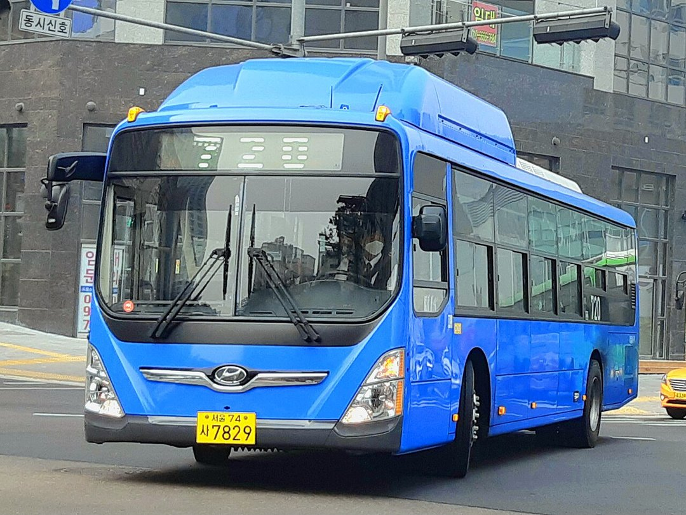
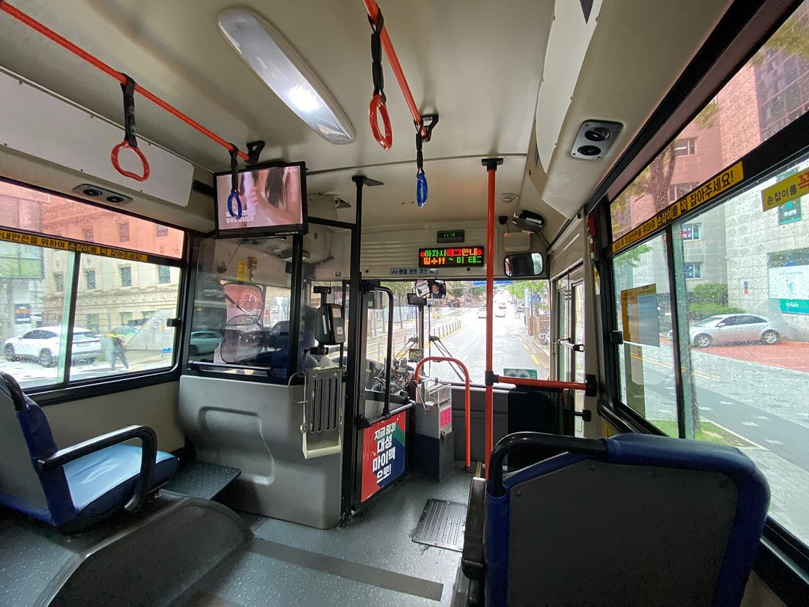

📷 사진 1 자리

▲ 서울 시내버스(2019년 자료사진) · 사진: Wikiwater2020 / CC BY-SA 3.0 / 위키미디어 공용
12월 1일부터 만 13~18세도 모두의카드로 대중교통비 20%를 돌려받을 수 있어요. 선불카드나 체크카드를 발급받아 모두의카드 앱이나 누리집에 등록하면 돼요. 지금까지는 19세 이상만 쓸 수 있었어요.
중학생 자녀가 있다면 카드를 어디서 만들고 정률형과 정액형 중 무엇을 고를지가 궁금하실 거예요.
3줄 요약
무엇이 바뀌나
모두의카드는 예전 K-패스가 이름과 방식을 바꾼 대중교통비 환급 제도예요. 국토교통부 대도시권광역교통위원회는 미성년자 본인인증과 약관을 고쳐 청소년도 가입할 수 있게 했다고 밝혔어요.
| 구분 | 11월까지 | 12월 1일부터 |
|---|---|---|
| 이용 나이 | 19세 이상 | 13세 이상 |
| 정률형 | - | 쓴 돈의 20% 환급 |
| 정액형(수도권 일반형) | - | 월 6만 2천 원 넘는 금액 환급 |
환급은 한 달에 대중교통을 15번 이상 탄 달에만 나와요. 통학으로 주 5일 왕복하면 넉넉히 넘는 횟수예요.
📷 사진 2 자리

▲ 버스 단말기에 카드를 찍은 횟수가 15번을 넘어야 해요(2024년 자료사진) · 사진: Sgroey / CC BY-SA 4.0 / 위키미디어 공용
카드 만들고 등록하는 순서
1. 카드사 앱이나 영업점에서 모두의카드 선불카드나 체크카드를 발급받아요.
2. 모두의카드 앱이나 누리집에 회원가입해요.
3. 받은 카드를 등록해요. 등록하지 않으면 환급이 안 돼요.
국토교통부 보도자료에 실린 12월 발급 카드사예요.
| 나이 | 발급할 수 있는 곳 |
|---|---|
| 13~18세 | 농협, 신한, 우리, 이즐, 코레일, 토스, 티머니, 하나, IBK기업, KB국민 |
| 18세 | 위 10곳 + 카카오뱅크, 케이뱅크 |
미성년자 카드는 회사마다 보호자 동의나 방문 절차가 달라요. 발급 전에 카드사 안내를 먼저 보세요.
정률형과 정액형, 뭐가 나을까
정률형은 쓴 돈의 20%를 돌려줘요. 정액형은 기준금액을 넘은 부분을 모두 돌려줘요. 수도권 일반형 기준인 6만 2천 원으로 계산하면 이래요.
| 월 교통비 | 정률형 | 정액형 |
|---|---|---|
| 3만 원 | 6천 원 | 0원 |
| 5만 원 | 1만 원 | 0원 |
| 8만 원 | 1만 6천 원 | 1만 8천 원 |
청소년은 요금이 성인보다 싸서 한 달에 6만 2천 원을 넘기기 어려운 경우가 많아요. 학교와 학원만 오간다면 정률형부터 보는 게 현실적이에요. 정액형 기준은 지역마다 다르니 앱에서 우리 지역 금액을 확인하세요.
정액형 안에도 두 가지가 있어요. 일반형은 한 번 탈 때 요금(환승 포함)이 3천 원 미만인 이용만 세고, 플러스형은 광역버스처럼 3천 원이 넘는 이용까지 세요. 수도권 성인 기준 플러스형의 기준금액은 월 10만 원이에요.
내년에 달라질 수 있는 것
2027년 2월에는 특화 카드 3종이 나와요. 카카오뱅크는 청소년용, KB국민카드는 청년용, 한패스는 국내 거주 외국인용이에요.
정액형 기준금액도 바뀔 수 있어요. 올해 4~9월에는 기준을 절반으로 낮춰 수도권 일반형이 3만 원이었어요. 세계일보 보도에 따르면 국회 국토교통위원회가 이 혜택을 내년 1년 내내 적용하는 예산 2,022억 원을 늘렸어요. 예결위와 본회의를 거쳐야 해서 아직 확정은 아니에요. 법정 처리 시한은 12월 2일이에요.
기준이 3만 원으로 내려가면 위 표의 5만 원 사용자도 정액형으로 2만 원을 돌려받게 돼요. 확정되면 그때 방식을 다시 고르면 돼요.
자주 묻는 질문
Q. 초등학생도 되나요?
아니에요. 12월부터 넓어지는 범위는 만 13세 이상이에요.
Q. 이미 쓰고 있는 학생용 교통카드로도 되나요?
모두의카드로 나온 선불·체크카드를 등록해야 해요. 지금 쓰는 카드가 목록의 상품인지 카드사에 확인하세요.
Q. 환급은 어디로 들어오나요?
카드 종류에 따라 다르니 발급할 때 환급 방식을 확인하세요.
청소년에게는 20% 정률형이 기본값이에요. 정액형이 유리해지는 건 한 달 교통비가 기준금액을 꽤 넘을 때인데, 학생 요금으로는 그 선을 넘기 어려워요. 내년 기준금액이 정해지는 12월 초 국회 결과를 보고 그때 한 번 더 따져 보면 충분해요.
12월 1일부터 가입할 수 있으니 이번 주말에 발급할 카드사를 미리 정해 두세요.
함께 보면 좋은 이슈
끝까지 읽어 주셔서 감사해요. 공감(좋아요) ♥ 꾹, 이웃 추가도 부탁드려요!
#모두의카드 #모두의카드청소년 #청소년교통비 #대중교통비환급 #K패스 #교통비환급 #청소년체크카드 #대광위 #12월달라지는것 #정률형정액형